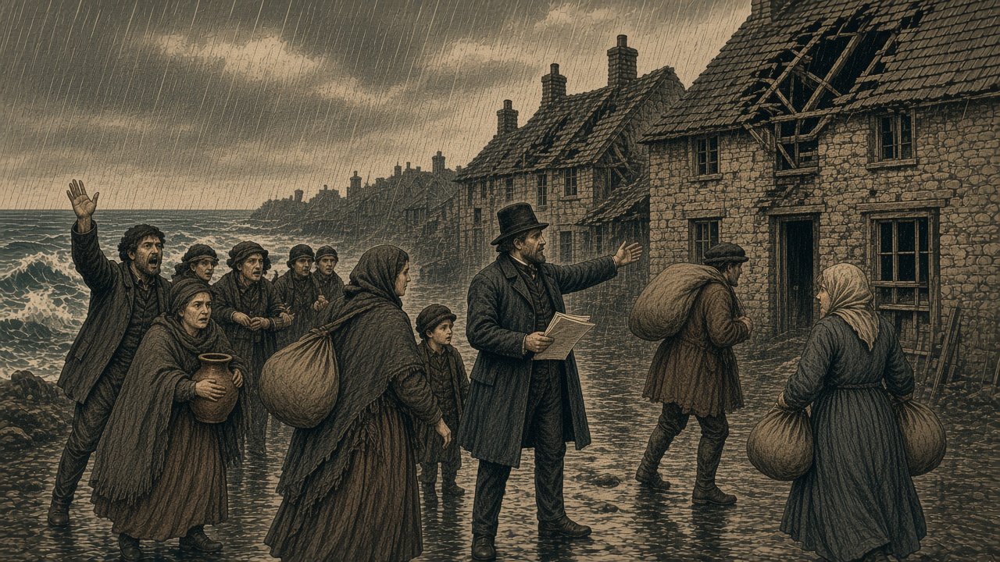

黒潮、ネルヴェナを新首都に
強制移住への批判受け議長も移転か
住民400人を移した村に政府機能 人口1,400人へ 旧都11,200人は王国領

【総合部】黒潮自治国は第134期、カペレナ王国に占領された旧都（16,12）に代わり、ネルヴェナ（20,17）を新首都とした。第133期に臨時首都を失った翌期の遷都である。かつて艦砲射撃で住民が絶えた村が、国の政治の中心となった。
今回の遷都には、前期に潮見玄吾議長がネルヴェナへの強制移住を命じた際、移住先の危険と住環境をめぐって厳しい批判を受けたことが背景にあるとみられる。住民を移した土地へ政府も移ることで、議長自らが責任を負う姿勢を示した形だ。
ネルヴェナの人口は400人から1,400人へ増えた。旧都は依然として王国領にあり、人口は10,800人から11,200人となった。同じ期、王国の戦艦がフィルノアを艦砲射撃し、100人が死亡した。黒潮の総人口はネルヴェナ1,400人、フィルノア1,700人の計3,100人である。
住民に移住命じた村へ 議長も政府を移す
ネルヴェナは第132期、艦砲で最後の住民100人が死亡し、無人となった村である。第133期、黒潮政府は400人をこの地へ移住させた。住宅には砲撃による傷みが残り、住民からは危険な土地への移住を命じられたことに批判が相次いだ。
「なんで俺たちが、誰もいなくなった村へ行かなきゃならないんだ」。移住を命じられた男性は前期、住宅と安全への不安を訴えていた。議長は、無人の村を放置すれば家屋や農地の荒廃が進むとして移住方針を掲げたが、批判は収まらなかった。
今期、議長はその村に政府を移した。自らも移住先に身を置くことで、住民に対する責任を示そうとしたものと受け止められている。
潮見議長「国民と同じ土地で再起図る」
潮見議長は遷都に際し、国家の存続とネルヴェナの復旧を訴えた。「旧都は敵の手に落ちた。だが都を奪われたからといって、黒潮自治国が滅びたわけではない。我々には守るべき国民がおり、取り戻すべき土地がある」
さらに前期の強制移住への批判にも言及した。「私はこの地へ住民を移す決断を下した。家も安全も十分ではないとの声を忘れてはいない。国民に移住を求めながら、政府だけが離れた場所にとどまるわけにはいかぬ。評議会もここで開く」
議長は「我々はこの村から再起を図る。国民が暮らす限り、黒潮の旗を降ろすことはない」と語った。旧首都の死守を誓ってきた議長にとって、今回の遷都は大きな政治的転機となる。
「議長も来るなら」住民の受け止め複雑
「最初は私たちだけ危ない場所へ行かされるのかと思った。議長も来るなら少しは話が違うね」。前期に移住した男性は期待を示した。「一緒に暮らすなら、壊れた家や道も放っておかないだろう」
一方、家の前で木材を積む女性は「偉い人が来たって、屋根は勝手に直らない。今度は役人も増えるんでしょう。先に来た私たちの住まいも何とかしてほしい」と訴える。政府の移転は歓迎と不安の双方を生んでいる。
無人の村から2期で首都へ 人口1,400人
第132期に人口0人となったネルヴェナは、前期400人、今期1,400人となった。雨の坂には修理を待つ家が並び、荷物を抱えた人々が行き交う。新たな政務施設の用意と並んで、住民の住まい、道路、食料の確保が急務となった。
「前期に来た人だって、まだ落ち着いて暮らせていない。都になったからって、先に住んでいる人を後回しにしないでほしい」。住民が求めるのは、首都の名にふさわしい日々の生活である。
「都が来れば、砲も来る」再攻撃を恐れる声
ネルヴェナの住民は艦砲射撃の記憶を抱え続けている。「都がこっちへ来るなら、敵の軍艦もこっちを狙うんじゃないか」。岸で漁具を畳む男性は沖を見た。「前は人がいなくなるまで撃たれた。政府が来たから安全だと言うなら、どう守るのか教えてほしいね」
「議長が来るのはありがたい。でも砲弾を止められるわけじゃない」。別の住民も安全対策を求めた。政府の政治的な決断は、住民にとって再攻撃への不安とも隣り合わせである。
旧都には11,200人 王国の支配下で暮らし続く
旧都（16,12）の人口は前期10,800人から11,200人に増えた。カペレナ王国の支配下にある都市では、今も商店が開き、人々が家族と暮らす。その人口は黒潮自治国の現人口3,100人を大きく上回る。
「都が移ったと聞いても、私たちはここに住んでいるんです」。旧都の商人は言った。「店も家もある。旗が変わったからといって簡単に離れられません」。住民の女性は「ここが黒潮の首都だったことまで、なくなるわけじゃないでしょう」と語った。
フィルノアに再び艦砲 100人死亡
遷都の同じ期、カペレナ王国の戦艦がフィルノアを砲撃し、100人が死亡した。人口は1,800人から1,700人となった。第128期の200人、第129期の200人、第131期の400人と合わせ、同都市で確認された艦砲による死者は900人に達する。
「また艦砲だよ。首都が移ったって聞いたけど、こっちには相変わらず砲弾が落ちてくる」。港の女性は傷んだ家並みを見た。「都の場所が変わっただけでは安心できません」
「議長も危ない村へ移ったのかもしれない。でも、フィルノアにも人が住んでるんだ」。残る1,700人の住民にとって、政府の責任はこれからも続く。
陸上戦果、黒潮が王国を上回る
第134期の陸上戦果は黒潮自治国1,700人、カペレナ王国1,100人。黒潮が600人上回った。累計戦果は黒潮99,000人、カペレナ147,800人。旧都と兵站基地を失った黒潮軍はなお抵抗を続ける。交戦詳細は2面。
泰平、戦争相手でない翠湖の都市を占領
泰平天国は戦争相手ではない翠湖自治州の都市を占領した。住民は10,200人。アルガリスト帝国の歩兵部隊も今期の戦闘で消滅した。第三国の都市の占領は地域情勢に新たな波紋を広げる。詳報3面。
3国で大火、58,500人死亡
チェス＝シロバキア共和国、なのです主義人民共和国、泰平天国で大火が発生し、計58,500人が死亡した。前期の37,000人、前々期の29,200人と合わせ、3期の犠牲者は124,700人となった。詳報4面。
なのです、いのらが市場を襲撃
なのですでは怪獣いのらが市場を踏み荒らした。南部の港では、前期に港湾施設を破壊したクジラが衰えた状態で残っている。詳報5面。
次期、オリョルッルと緑丘が開戦
オリョルッル王国と緑丘公国は第135期に開戦。第136期には青海共和国とオリョルッル、第137期には黒潮とオリョルッルの開戦が予定されている。
黒潮自治国は、占領された旧都からネルヴェナへ首都を移した。首都陥落後も政治機能を維持するための決断である。しかし今回の遷都には、前期に400人の強制移住を命じたことへの住民の批判が背景にあるとみられる。
ネルヴェナは第132期、艦砲で住民が絶えた村だった。政府はその地へ住民を送り、住宅や安全への不安を招いた。今期、議長自身も政府を移した。批判に向き合い、移住者と同じ土地で暮らす姿勢には意味がある。
だが、議長が移ったからといって前期の強制移住が正当化されるわけではない。傷んだ住宅の復旧、生活物資の確保、再度の砲撃への備えが欠かせない。新首都の1,400人が安心して暮らせるかが、政府の責任を測る試金石となる。
フィルノアでは今期も100人が死亡し、1,700人がなお暮らす。旧都に残る11,200人も忘れてはならない。住民に移住を命じた責任は、自らも移ることで終わらない。その土地で人々の暮らしを守ってこそ果たされる。